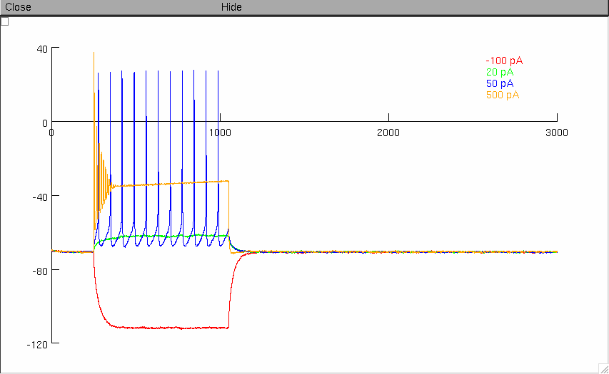
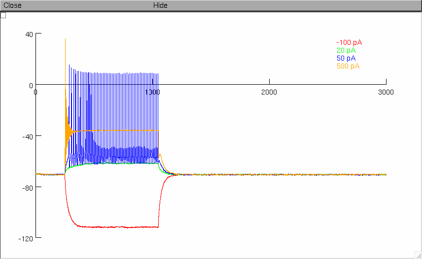
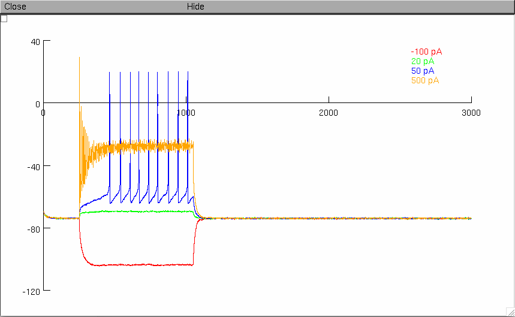
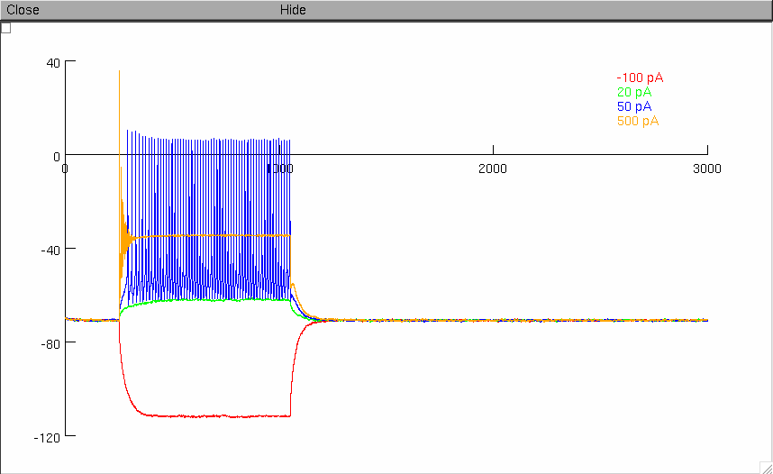
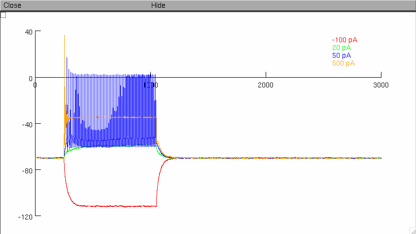

This is a readme for the models associated with the paper:
Guet-McCreight A, Camiré O, Topolnik L, Skinner FK. (2016). Using a Semi-Automated Strategy to Develop Multi-Compartment Models That Predict Biophysical Properties of Interneuron-Specific 3 (IS3) Cells in Hippocampus.eNeuro. 3(4).
URL: http://eneuro.org/content/3/4/ENEURO.0087-16.2016
These files were contributed by A Guet-McCreight.
This model will also be available in Open Source Brain (http://opensourcebrain.org).
----------------------
MODEL USAGE
----------------------
PREFACE:
Each folder contains mod files, a hoc file that specifies the model (i.e. *_TopModel.hoc), as well as an init.hoc file that simulates and plots the results of a current protocol for the model (i.e. -100 pA, 20 pA, 50 pA, and 500 pA).
FOLDERS AND NOMENCLATURE:
Note that there is a different version of an interneuron specific 3 morphologically-detailed model in each folder, where each folder contains a model with different types of channels or distributions of channels, as outlined here (note that the figure numbers indicate where the voltage plots for these models are found in the publication):
S.1 = Channels in soma only (slow and fast delayed rectifier potassium channels; Figure 4A1)
S.2 = Channels in soma only (slow delayed rectifier potassium channels removed; Figure 4A2)
SD = Channels in soma and dendrites (Figure 4A3)
SDprox1 = Channels in soma and proximal dendrites (A-type potassium channels in soma and proximal dendrites; Figure 7C1)
SDprox2 = Channels in soma and proximal dendrites (A-type potassium channels in soma only; Figure 7D1)
Note that each of these models is generated from having done an ion channel conductance parameter search in order to identify channel conductance combinations that best capture the experimental data. Also note that SDprox1 and SDprox2 best capture IS3 cell electrophysiology and backpropagating action potentials.
MOD FILES:
Before running a model, first compile the mod files accordingly. For example, using Unix/Linux, run the "nrnivmodl" command from within the model folder directory. Alternatively, using a Mac, drag all of the mod files to the "mknrndll" icon (or right-click and open with). For more options, consult:
https://www.neuron.yale.edu/neuron/faq
RUNNING SIMULATION:
To run and plot the current injection protocol simulation, simply run the "init.hoc" file (this file can be found in all of the folders). To do this in Unix/Linux use the command "nrniv init.hoc". To do this on a Mac, drag the init.hoc file to the "nrngui" icon (or right-click and open with).
EXPECTED RESULTS:
S1:

S2:

SD:

SDprox1:

SDprox2:
